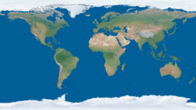

| Copyright | Written by David Himmelstrup |
|---|---|
| License | Unlicense |
| Maintainer | lemmih@gmail.com |
| Stability | experimental |
| Portability | POSIX |
| Safe Haskell | None |
| Language | Haskell2010 |
Reanimate.GeoProjection
Contents
Description
This module provides functions for mapping the surface of a sphere on to a 2D plane. It also has convenience functions for loading GeoJSON data.
Synopsis
- data Projection = Projection {
- projectionLabel :: String
- projectionForward :: !(LonLat -> XYCoord)
- projectionInverse :: !(XYCoord -> LonLat)
- data XYCoord = XYCoord !Double !Double
- data LonLat = LonLat !Double !Double
- project :: Image PixelRGBA8 -> Projection -> Image PixelRGBA8
- interpP :: Image PixelRGBA8 -> Projection -> Projection -> Double -> Image PixelRGBA8
- interpBBP :: Image PixelRGBA8 -> Projection -> Projection -> (Double, Double, Double, Double) -> (Double, Double, Double, Double) -> Double -> Image PixelRGBA8
- mergeP :: Projection -> Projection -> Double -> Projection
- isValidP :: Projection -> Bool
- scaleP :: Double -> Double -> Projection -> Projection
- flipYAxisP :: Projection -> Projection
- moveBottomP :: Double -> Projection -> Projection
- moveTopP :: Double -> Projection -> Projection
- equirectangularP :: Projection
- mercatorP :: Projection
- mollweideP :: Projection
- hammerP :: Projection
- cylindricalEqualAreaP :: Double -> Projection
- lambertP :: Projection
- bottomleyP :: Double -> Projection
- sinusoidalP :: Projection
- wernerP :: Projection
- bonneP :: Double -> Projection
- orthoP :: LonLat -> Projection
- cassiniP :: Projection
- augustP :: Projection
- collignonP :: Projection
- eckert1P :: Projection
- eckert3P :: Projection
- eckert5P :: Projection
- faheyP :: Projection
- foucautP :: Projection
- lagrangeP :: Projection
- drawFeatureCollection :: GeoFeatureCollection a -> (a -> SVG -> SVG) -> SVG
- loadFeatureCollection :: FromJSON a => FilePath -> (a -> SVG -> SVG) -> SVG
- applyProjection :: Projection -> SVG -> SVG
- applyProjection' :: Double -> Projection -> SVG -> SVG
- renderGeometry :: GeospatialGeometry -> SVG
Documentation
data Projection Source #
Projections are named bi-directional mappings between a sphere and a 2D plane.
Constructors
| Projection | |
Fields
| |
XY coordinates on a 2D plane. Valid ranges go from 0 to 1, inclusive.
Longitude and latitude. Valid range for longitude is -pi to +pi. Valid range for latitude is -pi2 to +pi2.
project :: Image PixelRGBA8 -> Projection -> Image PixelRGBA8 Source #
Apply on an image in equirectangular format. The source image therfore must have an aspect ratio of 2:1.
interpP :: Image PixelRGBA8 -> Projection -> Projection -> Double -> Image PixelRGBA8 Source #
Interpolate between two projections and apply the result to an image in equirectangular format. The source image must have an aspect ratio of 2:1.
interpBBP :: Image PixelRGBA8 -> Projection -> Projection -> (Double, Double, Double, Double) -> (Double, Double, Double, Double) -> Double -> Image PixelRGBA8 Source #
Interpolate between two projections and apply the result to an image in equirectangular format. The source image must have an aspect ratio of 2:1. Only the areas inside of the two bounding boxes (applying to the source and target projection, respectively) are mapped. Pixels outside of these bounding-boxes are undefined.
mergeP :: Projection -> Projection -> Double -> Projection Source #
Attempt to smoothly interpolate two projections. The result may not be continuous
and interpP may give prettier results.
isValidP :: Projection -> Bool Source #
Returns True iff a projection is consistent and complete.
scaleP :: Double -> Double -> Projection -> Projection Source #
Scale X and Y axis of projection.
flipYAxisP :: Projection -> Projection Source #
Invert the Y axis of projection.
moveBottomP :: Double -> Projection -> Projection Source #
Translate the lower-most point of a projection by an offset.
moveTopP :: Double -> Projection -> Projection Source #
Translate the top-most point of a projection by an offset.
Projections
equirectangularP :: Projection Source #

hammerP :: Projection Source #
bottomleyP :: Double -> Projection Source #
wernerP :: Projection Source #
bonneP :: Double -> Projection Source #
orthoP :: LonLat -> Projection Source #
augustP :: Projection Source #
faheyP :: Projection Source #

GeoJSON helpers
drawFeatureCollection :: GeoFeatureCollection a -> (a -> SVG -> SVG) -> SVG Source #
Map for all features and render the geometry.
loadFeatureCollection :: FromJSON a => FilePath -> (a -> SVG -> SVG) -> SVG Source #
Load GeoJSON from a filepath and render the geometry.
applyProjection :: Projection -> SVG -> SVG Source #
Apply a projection to an SVG image. This is a lossy transformation but the default tolerance is low enough that inaccuracies should not be visible.
applyProjection' :: Double -> Projection -> SVG -> SVG Source #
Apply a projection to an SVG image with a specified tolerance. Projections may turn straight lines into disjointed curves and the tolerance argument determined the accuracy of this transformation.
renderGeometry :: GeospatialGeometry -> SVG Source #
Render GeoJSON geometry as SVG.